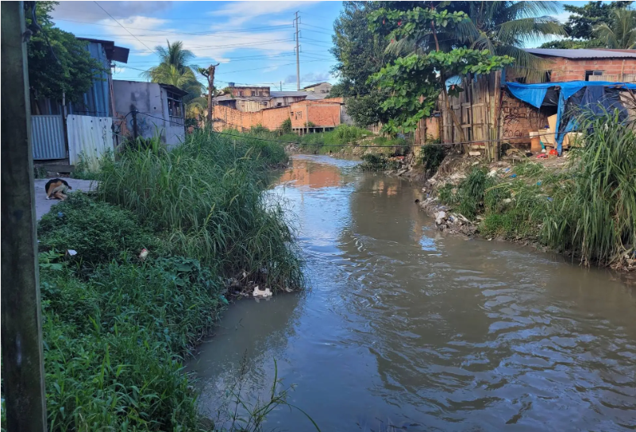
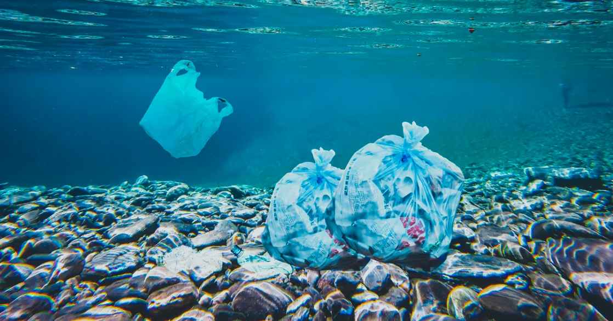

O Anamã é um empreendimento da Enactus UFPA, criado para combater a poluição plástica, protegendo a biodiversidade da Amazônia e apoiando comunidades locais através da economia circular.
Enfrentamos o desafio de 80% dos peixes contaminados por plásticos, desenvolvendo ecobarreiras de baixo custo e incentivando práticas sustentáveis de reciclagem.
Com 96% dos resíduos em nossos rios sendo plástico, a necessidade de ação é urgente. O impacto vai além da Amazônia, afetando ecossistemas e comunidades ao redor do mundo.
Através de parcerias locais, implementamos ecobarreiras que não apenas retêm os resíduos plásticos, mas também incentivam a reciclagem, transformando o problema em oportunidade para as comunidades.
Nossa ação vai além do meio ambiente. Estamos criando um impacto social, gerando emprego e renda para comunidades locais e incentivando a responsabilidade ambiental.
Para acessar, clique no título
Quer saber mais ou se envolver? Entre em contato e nos siga nas redes sociais.